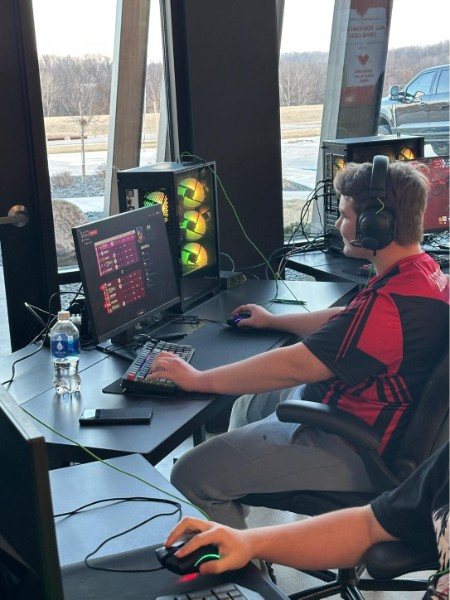

Future
I'm a Senior in high-school who enjoys working with computers; including hardware, and coding. I know p5.js, HTML & CSS, C#, Java, and some Python. p5.js is an open-source JavaScript library. I plan to pursue a future in programming. Most likely software development or web development. Game development is still something I'm interested in and looking at.
Esports
I also enjoy gaming. Particularly organized competitive gaming, or esports. Ive participated in some seasons for high-school, and some D3 college level. I tend to play Overwatch, but I am intrested in others and do enjoy some Mario Kart.

Music
Alongside that I'm also a big music connoisseur. I tend to listen to mostly metal, but do enjoy others. I like bands like Slipknot and Linkin Park. I do listen to a lot of others but those two are what I listen to the most.
I've still got a long way to go, so much could change. But for now... this is me!